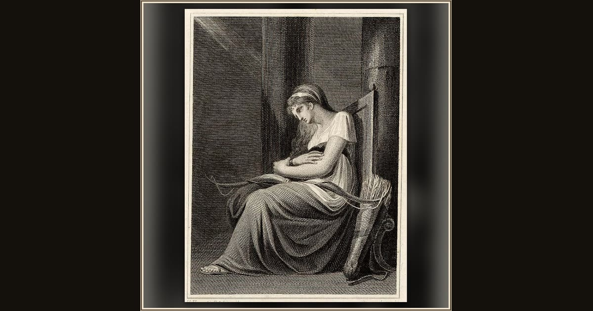

Penelope Holding the Bow of Odysseus
Robert Hartley Cromek, after Henry Fuseli · 1806 · British Museum · London, England
Penelope lifts her husband’s great bow and announces the contest: whoever can string it and shoot through twelve axes may win her hand. Explore its place in Book XXI of the Odyssey.